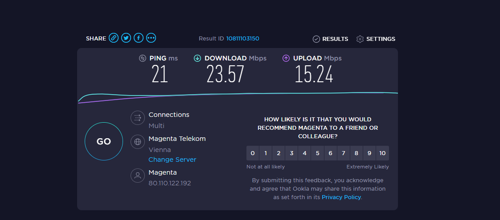
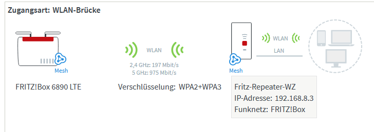
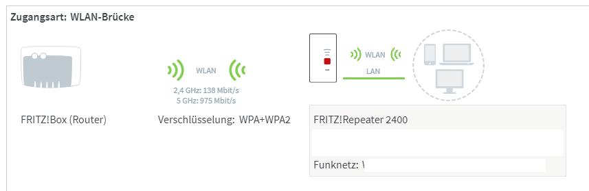
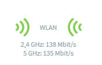

Hallo liebe Community,
ich habe schon seit geraumer Zeit Probleme mit meinem Internet. Früher konnte ich nicht mal richtig zocken ohne, dass ich aus der Runde gekickt wurde wegen einem Disconnect, aber das hab ich behoben indem ich die Leas time in den Routereinstellungen hochgestellt habe. (Bild unten)
Ich verwende einen Fritz Repeater 2400 der über Wlan mit meinem Router verbunden ist und über Lan an meinen PC.
Wir haben eigentlich einen Internettarif der 250mit/s verspricht und magenta tv. Inzwischen komme ich aber nur mehr auf maximal 7mb/s was für den Preis viel zu wenig ist. Ich weiß nicht ob es an mir liegt aber ich habe auch zum Beispiel immer wieder Internet Aussetzer (werden von TeamSpeake servern getrennt).
Kann mir jemand sagen was ich am besten einstellen soll bei beiden und wie ich das langsame internet beheben kann, die aussetzter wären noch okay ich will einfach nur schnelles internet.
Schreib doch mal, welchen Tarif / Anbindung du genau hast?
Die Speed ist bei dir tatsächlich im Keller - ist da zu allen Tageszeiten so?
vor 2 Stunden schrieb Christian_E:Schreib doch mal, welchen Tarif / Anbindung du genau hast?
Die Speed ist bei dir tatsächlich im Keller - ist da zu allen Tageszeiten so?
Danke für deine Antwort.
Ich habe den Digital TV + Internet Fiber 250 Tarif, welcher 250 mbit/s download und 50 mbit/s upload bieten kann.
Ich denke der Speed ist meistens gleich, aber ich versuche den Speedtest immer bei Steam Download oder so zu testen, aber da sollten die Server nicht das Problem sein.
Das ist das recht verstehe. Du bekommst nur 7 Mb/s oder 7 MB/s.
7 MBit kann ich mir nicht vorstellen. Stell mal einen Screenshot vom Speedtest rein.
Die Hotline war in deinem Fall noch nicht dran oder?
vor 29 Minuten schrieb Christian_E:Das ist das recht verstehe. Du bekommst nur 7 Mb/s oder 7 MB/s.
7 MBit kann ich mir nicht vorstellen. Stell mal einen Screenshot vom Speedtest rein.
Die Hotline war in deinem Fall noch nicht dran oder?
Habe einen Download Test gemacht habe maximal 5.50 mb/s bekommen.

Das habe ich bei nem Speed Test bekommen, aber hatte mal früher 30mb/s
Ich habe bei meinem Router eigentlich 2,4ghz und 5ghz Verbindung eingestellt und es sollte an die 30mb/s kommen. Vielleicht passt etwas nicht mit meinen Einstellungen, kann mir jemand da vielleicht helfen meinen Fritz Repeater 2400 mit der Connect Box perfekt zu synchronisieren?
Hallo,
Schau mal auf die Oberfläche vom Repeater da sieht man die Verbindung und die Geschwindigkeiten

vor 41 Minuten schrieb jung376:

Hier wird mir das angezeigt, aber der Wert ändert sich quasi alle 2 Minuten und ich glaube solange ich nicht über 144mbit/s über 2.4ghz bekomm ist mein internet generell schlechter aber weiß nicht warum. Hast du vielleicht Tipps wie ich meinen Router und den Repeater richtig miteinander einstelle?
Danke für deine Antwort ^^
Das Internet ist so langsam es ist sooo nervig. Abgesehen davon wie oft es Aussetzt und ich einen 200er Ping habe. Ich dachte Glasfaser ist gut aber inzwischen bezweifle ich, dass wir wirklich Glasfaser haben.
5 ghz Netz sollte ja eh mit 975 Mbit/s arbeiten - Verbindung zum Router denke ich passt - bei Internetproblem bin ich leider raus
vor 8 Minuten schrieb jung376:5 ghz Netz sollte ja eh mit 975 Mbit/s arbeiten - Verbindung zum Router denke ich passt - bei Internetproblem bin ich leider raus
das Internet ist einfach nur schmutz und funktioniert bei mir fast nie richtig. Echt traurig
vor 25 Minuten schrieb rene187:Das Internet ist so langsam es ist sooo nervig. Abgesehen davon wie oft es Aussetzt und ich einen 200er Ping habe. Ich dachte Glasfaser ist gut aber inzwischen bezweifle ich, dass wir wirklich Glasfaser haben.
Die Screenshots aus dem Eingangspost sehen wie von einer Fiber Box 1 oder 2 aus. Hier ist Fiber aber nur ein Markenname für das Coax-Kabel Netz, also das letzte Stück ist über Kupfer.
vor 13 Minuten schrieb rene187:das Internet ist einfach nur schmutz und funktioniert bei mir fast nie richtig. Echt traurig
Bei einem 250Mbit/s Tarif über Coax-Kabel ist aber dennoch was Faul und ein Ping von 200ms nach Wien oder auch den meisten Servern on Europa ist da definitiv zu hoch.
Das Beste wäre, wenn du einmal direkt per Kabel am Router ansteckst und testes wie schnell es ist um den Faktor W-Lan auszuschließen.
vor 10 Minuten schrieb NTM:Die Screenshots aus dem Eingangspost sehen wie von einer Fiber Box 1 oder 2 aus. Hier ist Fiber aber nur ein Markenname für das Coax-Kabel Netz, also das letzte Stück ist über Kupfer.
Bei einem 250Mbit/s Tarif über Coax-Kabel ist aber dennoch was Faul und ein Ping von 200ms nach Wien oder auch den meisten Servern on Europa ist da definitiv zu hoch.
Das Beste wäre, wenn du einmal direkt per Kabel am Router ansteckst und testes wie schnell es ist um den Faktor W-Lan auszuschließen.
Naja der Repeater ist ja eigentlich gut denke ich, ich habe eine Connect Box (Bild unten) ich glaube eigentlich, dass uns gesagt wurde, dass wir Glasfaser haben, aber anscheinend war das gelogen, gleich wie, dass internet gut ist.
Es ist echt traurig und schon peinlich..

Kann ich irgendwo einstellen, dass mein PC am meisten Internet bekommt?
{kind=link}
{kind=link}
{kind=link}
{kind=link}